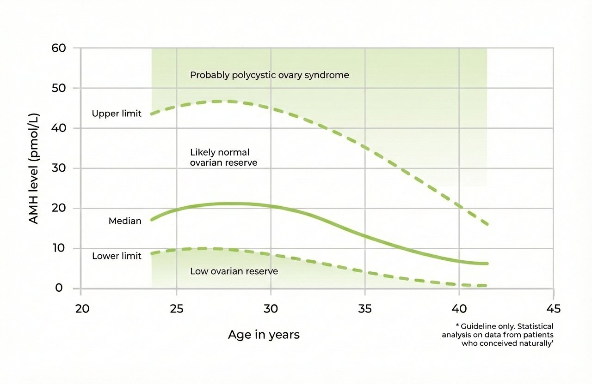

Evidence-based guidance for optimal patient outcomes
Endometriosis affects 10% of reproductive-aged women and frequently requires surgical management. However, surgical treatment carries significant risks to ovarian reserve and future fertility.
Despite this substantial risk, there remains conflicting evidence and a lack of clear international guidelines on when to counsel patients about fertility preservation.
This tutorial synthesizes leading research to provide practical, evidence-based guidance for identifying patients who may benefit from fertility preservation consultation.
A growing body of evidence suggests potential benefits of fertility preservation in the following scenarios. Surgery for endometriosis has been associated with decreased ovarian reserve, particularly in certain patient populations.
Fertility preservation counseling should be discussed before ovarian surgery Research indicates that each surgical procedure is associated with approximately 40% reduction in ovarian reserve markers. Early referral allows optimal timing, comprehensive counseling, and preserves maximum fertility potential. However, individual patient circumstances vary, and fertility preservation may not be appropriate or desired by all patients.
Clinical scenarios listed in order of prevalence across multiple studies. Full reference list below supports the evidence for fertility preservation consideration in these patient populations.
Reference ranges for ovarian reserve assessment

Best for: Women not in a relationship or preserving before surgery
Process: Ovarian stimulation (10-14 days) → Egg retrieval → Vitrification
Note: May require multiple cycles for optimal numbers, especially with diminished reserve
Fertility preservation may be covered by Medicare in the context of endometriosis or benign gynecological disease when there is documented evidence of POI (lower than 10th percentile for AMH).